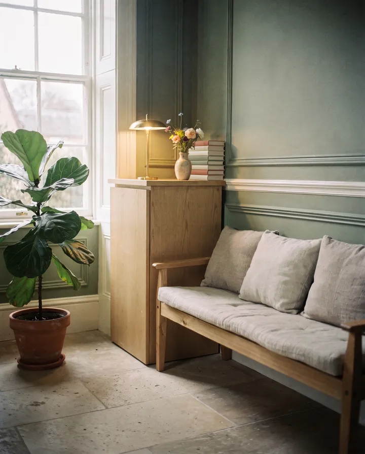
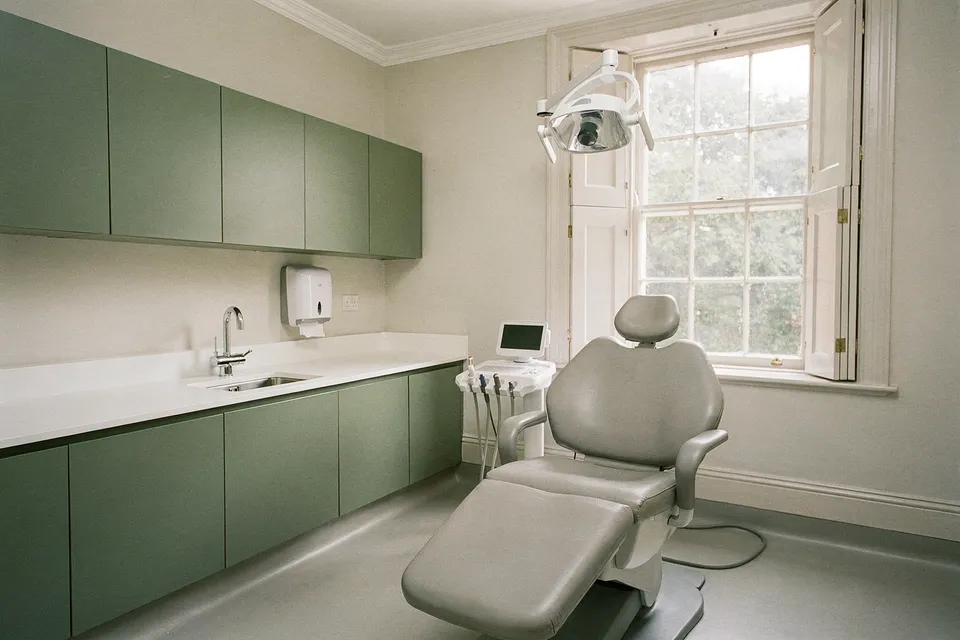
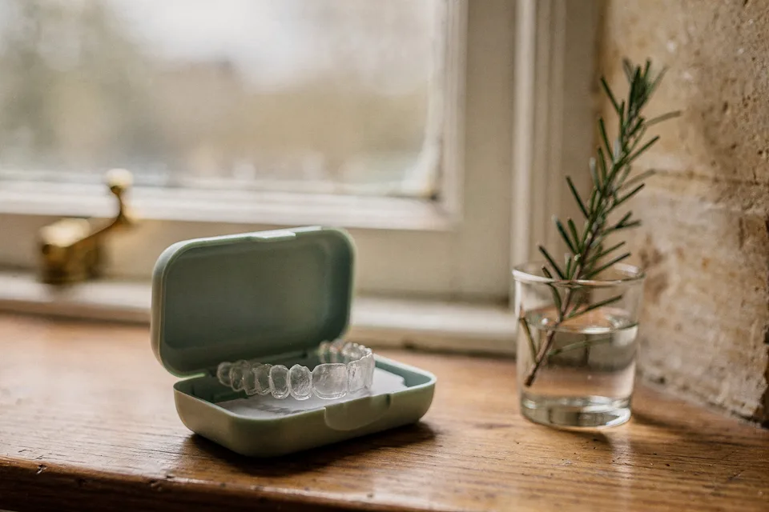
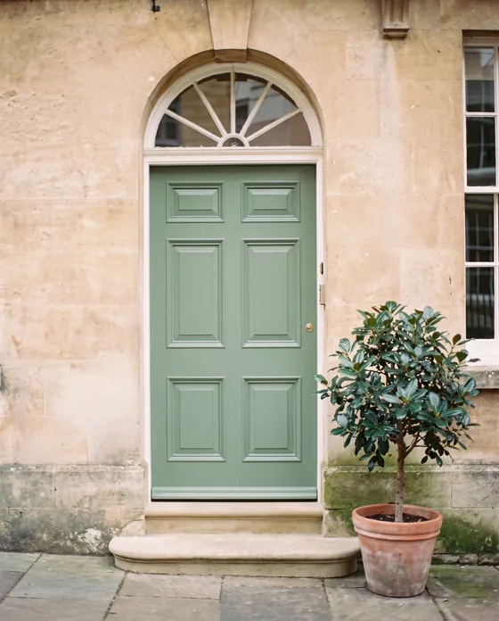

Fanlight Plan
£18.50 a month
- Two check-ups a year
- Two 30-minute hygiene visits
- 10% off treatment, emergency assessments included
£264 a year if you paid as you go. On the plan, £222.
Open Monday to Saturday
NHS places open for children under 18 · In pain? Ring 01632 960 214 as soon as we open
Check-ups, hygiene, repairs and clear aligners in a Georgian townhouse just off Bath Street. Longer appointments, prices you can read before you sit down, and someone on the phone who knows your name.

Yes. Private, or on our monthly plan.
Your first visit is 45 minutes and £72, with a written plan and prices before anything else happens.
For children, yes. Adults, not right now.
Under-18s are seen on the NHS, free. We’ll tell everyone on our list if adult places open.
Ring when we open. We keep slots free.
That’s 08:00 on weekdays and 09:00 on Saturdays. Emergency appointments are £90 with X-rays and pain relief. Out of hours, call NHS 111.
Most of what we do is keeping healthy mouths healthy. When something does need fixing, we show you the photos, explain the options and write down the price.

A proper look, not a quick count. We check gums, teeth, jaw and the soft tissue of your mouth, and talk you through it.
From£54Cleaning, polishing and stain removal with Jan or Megan. No check-up needed first.
From£78Tooth-coloured fillings, crowns, root canal treatment and, when there’s no better option, extractions.
From£155Straighter teeth with clear trays you take out to eat. Planned, fitted and checked here by Dr Rohan Mehta.
From£2,450Custom-made trays and gel you use at home over two to three weeks. Gentler and longer-lasting than in-chair kits.
From£360A single implant with its crown, placed and restored here. We start with a consultation and a 3D scan.
From£2,750Toothache, a broken tooth or a lost crown. Slots kept free every day we’re open.
From£90NHS check-ups and treatment for under-18s, free. Book them in here, or bring them along to your own appointment.
NHSFreeNot sure what you need? Book a check-up and we’ll work it out together.
Clear trays, changed every week or two, that move your teeth a fraction of a millimetre at a time. Most people we treat are adults whose teeth have drifted since school. You’ll see the whole plan on screen before you commit to anything.

These are our private fees. You’ll always get a written estimate before treatment starts, and anything over £500 can be spread over 12 months at 0%.
Fees from 1 September 2026
Children under 18 are seen on the NHS and pay nothing. How 0% finance works.
One monthly payment covers your routine visits, takes 10% off any treatment, and includes emergency assessments and dental injury cover, at home or abroad.
£18.50 a month
£264 a year if you paid as you go. On the plan, £222.
£27.50 a month
For gum problems, braces wearers and coffee lovers. £420 of visits for £330.
You can join at your first check-up. No joining fee, and you can leave with a month’s notice.
You’ll see the same dentist each time unless you ask otherwise. Everyone clinical is registered with the General Dental Council, and you can check their numbers on the GDC register.
Principal dentist
Clare set up Fanlight with Rohan after twelve years in Bath. Good with nervous patients; she’d rather explain twice than rush once.
BDS (Bristol), MJDF RCS (Eng) · GDC 81427Dentist, aligners and implants
Rohan plans every aligner case himself and does our implant work. Ask him about cycling the Somerset levels, at your own risk.
BDS (Birmingham), PGCert Implant Dentistry · GDC 196583Dental hygienist
Twenty-six years of cleaning teeth, the last six of them here. Jan will get you flossing, one way or another.
Dip Dental Hygiene · GDC 104772Practice manager
Delroy runs the diary, the plan and the finance paperwork. If a bill ever surprises you, he wants to hear about it.
Your first call for fees, plans and finance“I hadn’t been to a dentist in nine years and I was dreading it. Clare showed me every photo, told me what could wait and what couldn’t, and gave me the prices on paper before she touched anything.”
“Cracked a tooth on a Saturday morning, rang at nine and was seen by eleven.”
“Jan is the only hygienist who has ever got me to floss. Gently terrifying, in the best way.”
Four minutes’ walk from the Cattle Market car park, two from the bus stops on Market Place.

Look for the green door with the fanlight.Step-free entrance through the courtyard gate, ten metres further up the lane.
| Monday | 08:00–18:00 |
|---|---|
| Tuesday | 08:00–19:30 |
| Wednesday | 08:00–18:00 |
| Thursday | 08:00–18:00 |
| Friday | 08:00–16:00 |
| Saturday | 09:00–13:00 |
| Sunday | Closed |
Ring as soon as we open (08:00 on weekdays, 09:00 on Saturdays) and we’ll see you the same day if we possibly can. Out of hours, call NHS 111. If swelling affects your breathing or swallowing, call 999.
01632 960 214If something isn’t right, please tell us. Speak to Delroy, ring 01632 960 214 or write to us at the practice. We’ll acknowledge it within three working days and aim to reply in full within ten.
Still not happy? For private treatment you can contact the Dental Complaints Service; for NHS treatment, NHS Somerset Integrated Care Board, and after that the Parliamentary and Health Service Ombudsman. We’ll give you their details with our reply.
We keep your notes, X-rays and contact details securely, only for your care and for as long as the law asks us to. We never sell or share them for marketing.
You can ask for a copy of your records at any time, free of charge. Delroy is our data protection lead.
Step-free entrance through the courtyard, a ground-floor surgery and toilet, a hearing loop at reception and large-print forms. Ask for a longer appointment if it helps.
This website works with a keyboard and screen readers. If anything gets in your way, tell us and we’ll fix it.
Choose a reason, pick a time, and you’re in. Or ring Abi on 01632 960 214.